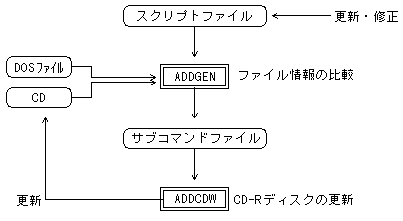

★
PROGRAMMER'S GUIDE
★
追記ライトワンス
▲
戻る
｜
進む
▼
追記ライトワンスシステムユーザーズマニュアル
付録Ａ．関連ツール「ADDGEN」
A.1 概要
ADDGENはADDCDWのサブコマンドファイルを自動生成するツールです。
CD-Rディスクのファイルを更新するために、VCDBUILD用スクリプトファイル（以下、スクリプトファイルと省略）とADDCDW用サブコマンドファイルの両方を修正すると、手間がかかり不整合も生じやすい。
この問題を解決するため、スクリプトファイルを修正するだけで、それに対応するADDCDWサブコマンドファイルを自動生成します。
A.2 機能
スクリプトファイルとCD-Rディスクを比較し、変更があったファイルを追加／削除／置換するためのADDCDW用サブコマンドファイルを出力する。即ち、CDに対しADDCDWを使ってどのような更新処理をすれば、スクリプトファイルに記述されたファイル構造と同一になるかを調べます。
DOS上のファイルとCD-Rディスク上のファイルの日付・時間を比較し、DOS上のファイルの方が新しい場合にファイルが変更されたと判断します。
図A.１ ADDGENのデータフロー

A.3 起動方法
DOSのプロンプトから以下の形式のコマンドを入力してください。
C:>addgen スクリプトファイル名 [サブコマンドファイル名] [オプション]
（１）スクリプトファイル名
更新後のCD-ROMの内容を記述したスクリプトファイルの名称。
拡張子を省略した場合は、「.scr」が省略されたものとみなされます。
（２）サブコマンドファイル名
出力するADDCDW用サブコマンドファイルの名称。
省略された場合は、スクリプトファイル名の拡張子を「.cdw」としたサブコマンドファイルを出力します。
（３）オプション
-c
：
DOS上のファイルとCD-Rディスク上のファイルの内容を比較し、変更があった場合にファイルを置換する。日付・時間が古いファイルに更新したい場合に必要です。
ただし、インタリーブされたファイル、MPEGストリーム、CDDAファイルは、日付・時間が比較されます。
-e
：
メッセージを英語で表示します。省略した場合、DOSの言語モードを判別して、日本語か英語のどちらかのメッセージを表示します。
A.4 動作内容
スクリプトファイルとCD-Rディスク上の最終セッションを比較し、サブコマンドファイルを出力します。以下の場合に、各サブコマンドを出力します。
（１）全面追記サブコマンド
CD-RドライブにセットされたCD-Rディスクが新品の場合。
ディレクトリ構造を更新する場合。
インタリーブされているファイルを更新する場合。
（２）ファイル追加サブコマンド
CD-Rディスク上に無いファイルがスクリプトファイルにあった場合。
（３）ファイル削除サブコマンド
CD-Rディスク上にあるファイルがスクリプトファイルに無い場合。
（４）ファイル置換サブコマンド
オプションで指定された方法でファイルを比較し、ファイルが変更されている場合。
A.5 エラーレベル
実行した結果に従い、以下のエラーレベルをDOSに返します。
（１）エラーレベル：0
正常終了しました。サブコマンドファイルが出力され、ADDCDWを実行することができます。
（２）エラーレベル：1
全面追記する必要がありますが、ディスクイメージファイル、TOCファイルが作成されていません。
サブコマンドファイルが出力され、VCDBUILD, VCDMKTOCを実行すれば、ADDCDWを実行することができます。
（３）エラーレベル：2
処理を継続することができません。詳細は
エラーメッセージ
を参照してください。
A.6 制限事項
スクリプトファイルに記述できるファイル数は、起動時に「MAX FILE」で表示される個数以下とします。
▲
戻る
｜
進む
▼
★
PROGRAMMER'S GUIDE
★
追記ライトワンス
Copyright SEGA ENTERPRISES, LTD,. 1997
 ★PROGRAMMER'S GUIDE
★追記ライトワンス
★PROGRAMMER'S GUIDE
★追記ライトワンス
★PROGRAMMER'S GUIDE
★追記ライトワンス
★PROGRAMMER'S GUIDE
★追記ライトワンス